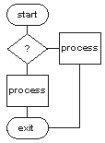

|

LinuxAsmTools |
LinuxAsmTools - HowTo read CMOS memoryReading CMOS memory with assembler mini-HOWTO jeff owens, jeff@linuxasmtools.net v1.01, 06 April 2009 How to read CMOS memory with example program. ______________________________________________________________________ Table of Contents 1. Disclaimer 2. Introduction 3. Using Ports 4. Talking to the Hardware 5. Running the Example program 6. Compiling the example program 7. Where can I find more information? ______________________________________________________________________ 1. Disclaimer The following document is offered in good faith as comprising only safe programming and procedures. No responsibility is accepted by the author for any loss or damage caused in any way to any person or equipment, as a direct or indirect consequence of following these instructions. 2. Introduction The most recent version of this document can always be found at http://linuxasmtools.net Most kernels are not configured to access CMOS memory, this make reading CMOS a little work. This howto will discuss the process of reading CMOS and introduce a sample program to show CMOS time. The sample program can be downloaded in two files cmos.asm and cmos.inc. 3. Using Ports To get at CMOS we need to read IO ports 70h and 71h. We can't do this from user space, so programs must run with root status. Before starting it is a good idea to check our status as follows: call sys_getuid ;asmlib call to get our UID or eax,eax ;check if root jz we_root ;jmp if root Next, we ask the kernel for access to the CMOS ports: mov ebx,70h ;starting port mov ecx,2 ;number of ports mov edx,1 ;enable call sys_ioperm ;asmlib call to ioperm js cmos_exit ;jmp if no access 4. Talking to the hardware To access a byte in CMOS memory we output its address to port 70h and read the data on port 71h. The following subroutine will read one byte from CMOS. ;input: al=address ;output: al=data read_cmos: mov dx,70h ;adr select port out dx,al ;select adr call waitx ;add delay mov dx,71h ;data port in al,dx ;read data ret 5. A complete program to show CMOS date [section .text] extern sys_exit global _start,main extern sys_getuid extern stdout_str extern crt_write extern byte_to_ascii extern sys_ioperm main: _start: call sys_getuid or eax,eax ;check if root jz we_root ;; mov ecx,warning call stdout_str jmp cmos_exit we_root: mov ecx,cmos_msg mov edx,cmos_msg_size call crt_write mov ebx,70h ;starting port mov ecx,2 ;number of ports mov edx,1 ;enable call sys_ioperm js cmos_exit mov esi,[cmos_table_ptr] cmos_read_loop: mov al,[esi] ;get address cmp al,-1 je cmos_exit ;exit if end of table call read_cmos ;read byte mov edi,cmos_value call byte_to_ascii mov [edi],byte 0ah ;terminate value string inc edi mov [edi],byte 0 inc esi ;move past address mov ecx,esi ;get ptr to text call stdout_str mov ecx,cmos_value call stdout_str cmos_next_table: lodsb or al,al jnz cmos_next_table jmp short cmos_read_loop cmos_exit: call sys_exit ;library call example ;---------------------------------------------- ;input: al=address ;output: al=data read_cmos: mov dx,70h ;adr select port out dx,al ;select adr call waitx mov dx,71h ;data port in al,dx ;read data ret ;--------------------------------------------- waitx: movzx ecx,dl wx: loop wx ret ;--------------------------------------------- [section .data] cmos_table: db 06h ;Day of the Week db 'address 06 (day of week) = ',0 db 07h ;Day of the Month db 'address 07 (day of month) = ',0 db 08h ;Month db 'address 08 (month) = ',0 db 09h ;Year db 'address 9 (year) = ',0 db -1 ;end of table cmos_table_ptr dd cmos_table cmos_value times 5 db 0 cmos_msg: incbin "cmos.inc" cmos_msg_size equ $ - cmos_msg --- end of cmos.asm -------------------------------- incude file cmos.inc follows ---- start of cmos.inc ----------------------------- CMOS or NVRAM memory used to hold computer settings and provide a clock. Since we want the clock and CMOS to stay active when the computer is off, a battery is needed. CMOS memory is separate from other address spaces and requires two ports for access. If we have root access these ports (70h & 71h) can be read and show the following: 5. Running the example program. If we currently have root status, the example program can be started with: ./cmos It will show date values read from cmos. Normally we will not be root, so we might us sudo as follows: sudo ./cmos 6. Compiling the example program. The example program can be compiled with the following tools: nasm - assembler asmlib - library of assembler functions The easy way to do this is to install, asmide and start it as follows: asmide cmos.asm asmide will provide a menu, with compile and debug options. To manually compile the source use the following: nasm -g -f elf cmos.asm ld cmos.o -static -o cmos /usr/lib/asmlib.a 7. Where can I find more information? google for "Phil Storrs PC Hardware book" http://moon.inf.uji.es/docs/interr/CMOS/CMOS.HTM |